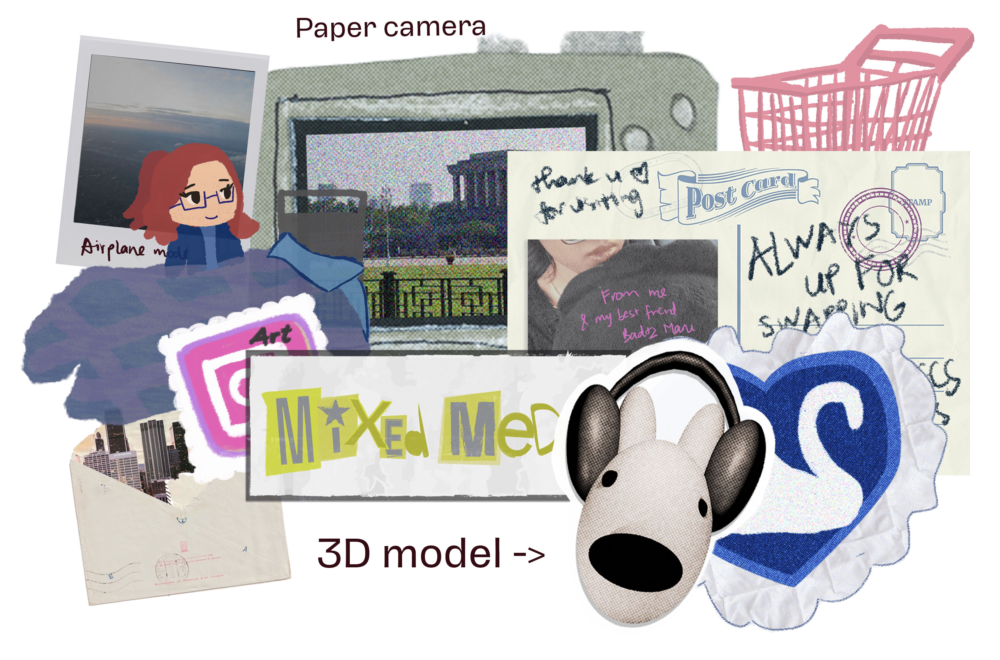

My first portfolio website - built with HTML, CSS, and JS - was designed as both a digital self-portrait and an interactive scrapbook, a space that mirrors my world of curiosity and nostalgia. I wanted it to feel like wandering through my thoughts: full of texture, imperfection, and small surprises waiting to be found.

The visual language combines collage textures, scanned materials, and vector graphics inspired by zines and analog media. Each section acts as a window into different sides of myself:
★ Home page: playful and intimate, a glimpse into my artistic approach and tone.
★ Works section: organized and color coded like themed sticker tabs (Poetry, Graphics, UI/UX, Mixed Media), each unique but connected like everything belongs to one's visual diary.
★ About & Contact: designed like a journal spread with fun interactions and stickers.
Inspired by nostalgic aesthetics, tangible materials, and the warmth of personal collections, I wanted to bring a sincere, fun human touch to an increasingly digital world by blending polish with playfulness, structure with spontaneity. How authentic expression can coexist with engaging visual is exactly the "alive and flawed" quality this portfolio seeks to achieve.


The process involved a lot of trial and error: testing layouts, reworking navigation, and finding the right balance between playfulness and clarity. Many sections went through multiple redesigns (replacing the work headers with vector “stickers” for consistency, reshaping the about page entirely) before settling on their final form. I also spent time refining spacing, hierarchy, and responsiveness to ensure the visual rhythm stays intact across screens.
 Versions of pages before final design and logo testing
Versions of pages before final design and logo testing
The site features a mix of vector elements, scanned textures, and digital drawings to reflect my mixed-media approach. Subtle animations enhance the experience without detracting from the narrative. Each page, from the trinket-filled landing to the journal-style about section, tells a cohesive story about design as an emotional, evolving process.
 Did you catch my 4 favorites ;)
Did you catch my 4 favorites ;)


Building this site taught me how deeply personal web design can be. This portfolio isn’t just a place to display work, it is the work itself, a living space where all my fragments meet.
Developed during my first year of the Digital Media program at RMIT University, the previous version of this website recieved a High Distinction for its visual approach and unique style.
Personal Portfolio
- VS Code
- Photoshop
- Illustrator